Mount Warren with Yelly
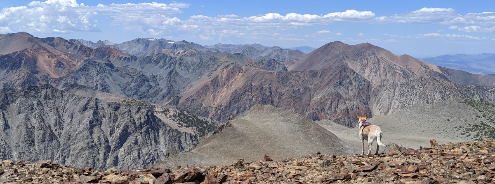
Hi I’m Mica, I am a dog.
Just me and my BFF Yelly went together for a Sunday stroll up a peak: Mount Warren, 12,332 ft. Having started up the mountain and turned around 4 years ago because it was so boring, Yelly warned me that it would be a boring day. But if there’s anything a dog is good at, it is finding a way to not be bored.

When Yelly got into the adventure truck that morning I jumped right into the copilot seat, because I know this machine to be a magical portal to interesting places. We headed towards Tuolumne but stopped before we got there. I have still never been to Yosemite, I wonder why no one will bring me?
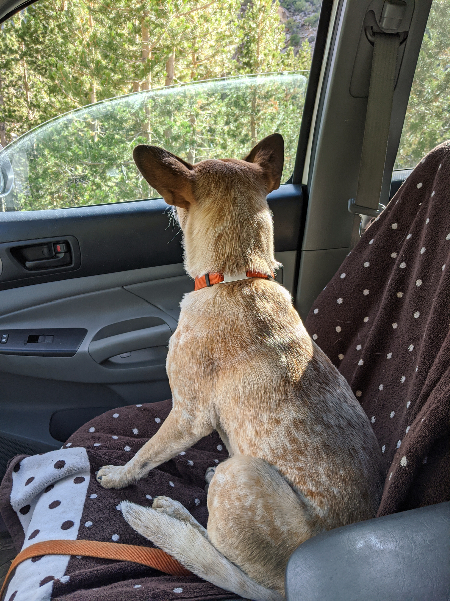
There were plenty of trees at the start of the hike for squirrels to live in, I kept my nose peeled for juicy rodents. Yelly called me a lot in the beginning, but after a while we relaxed into a routine of me going out to scout and Yelly reliably following my lead.
We passed through some delicious mountain water streams. Yelly kept splashing me!
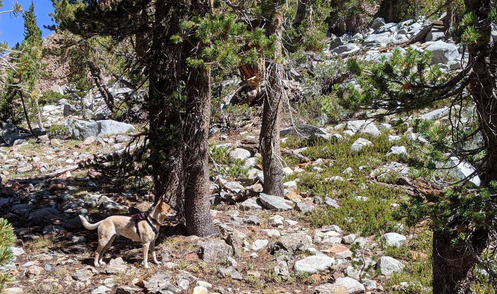
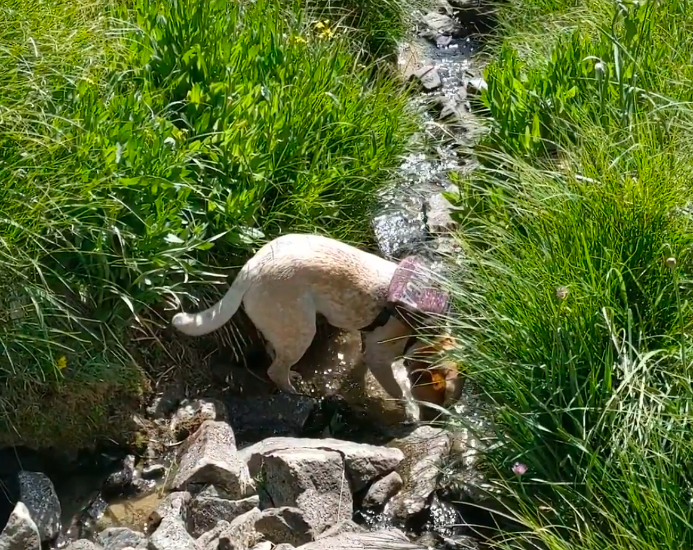
Soon the tall grass came to an end and we entered the talus zone.
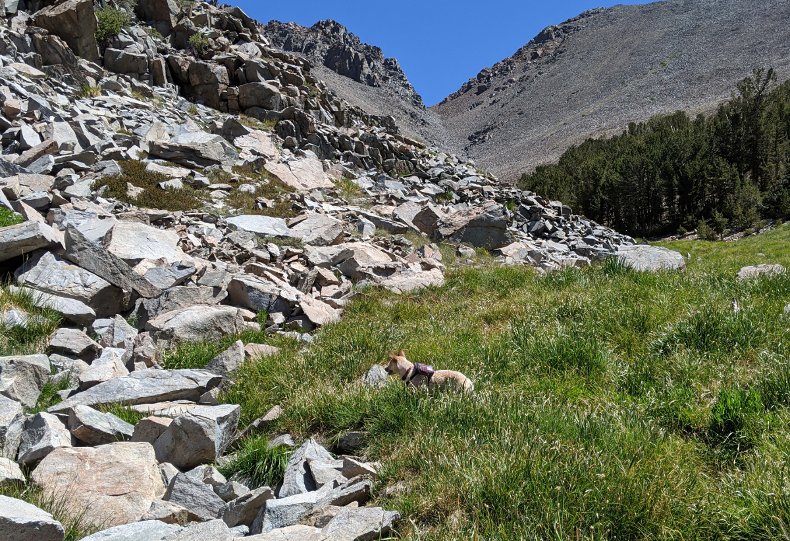
Yelly stopped us for breaks occasionally, like humans tend to do. Dogs don’t really take breaks, but I would occasionally keep her company (especially since it meant I would recieve food).
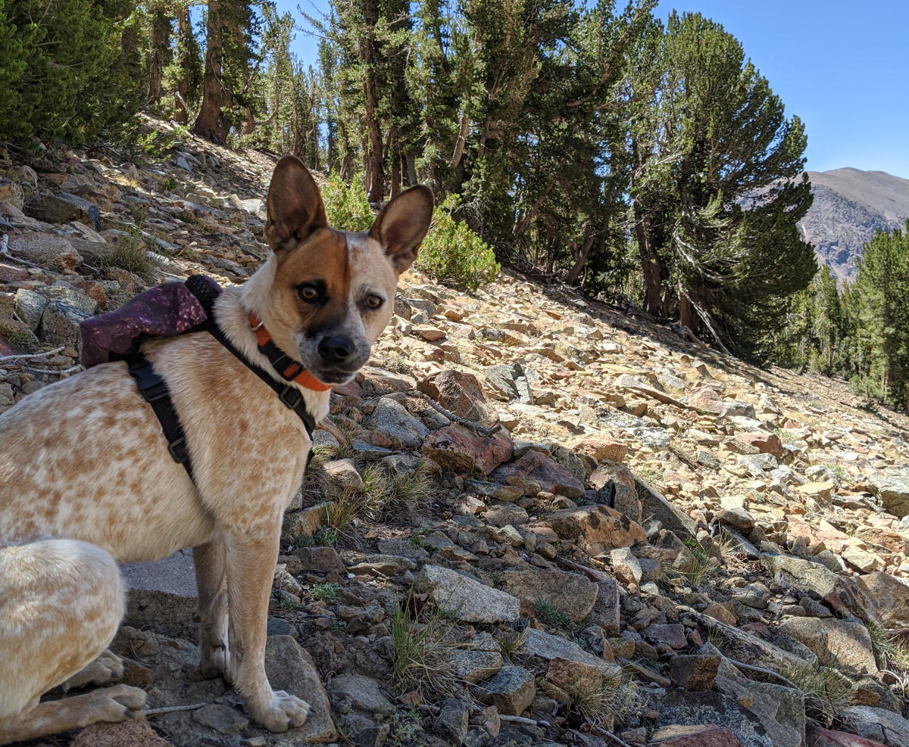
The talus field seemed to go forever into the distance, perhaps the entire mountain was a pile of talus. The sun was hot, and Yelly offered me a lot of water, even when I wasn’t thirsty. When I didn’t drink, she dumped the water on my back!
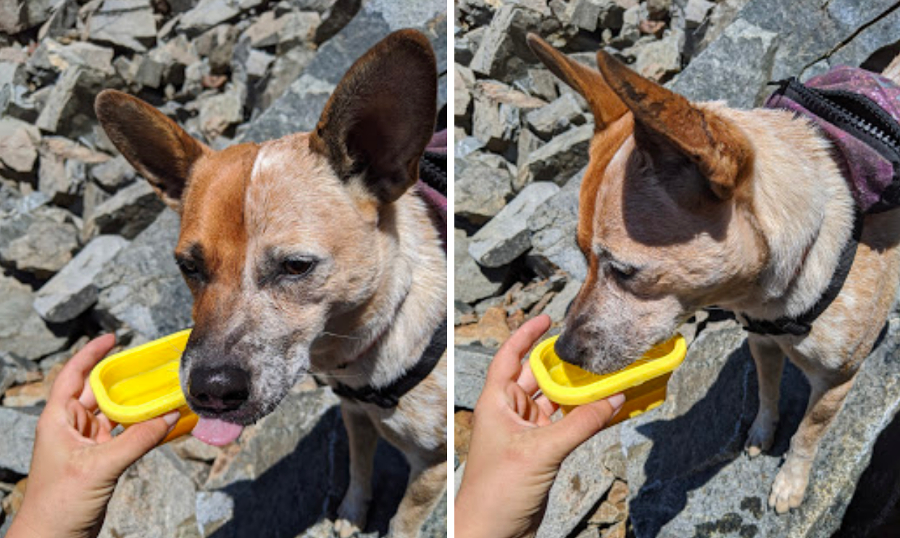
Do I have to??
Finally the talus gully brought us to a delightful detour: snow! watermelon flavoured this time. I love snow, it is the ideal playground to dig and wriggle in with little consequence, although I have basically an infinite pain tolerance anyway.
I would be happy to play in the snow all day, but we had to continue to the summit. I found the register! This is my third SPS. There was a big view of Mono Lake below, and Yosemite which I can look at but not walk on(?)
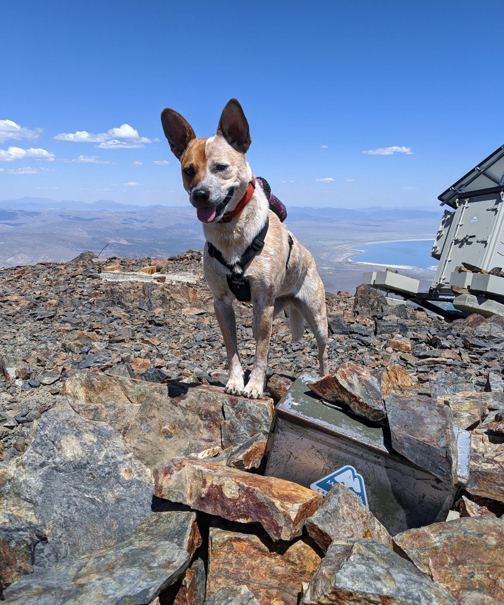
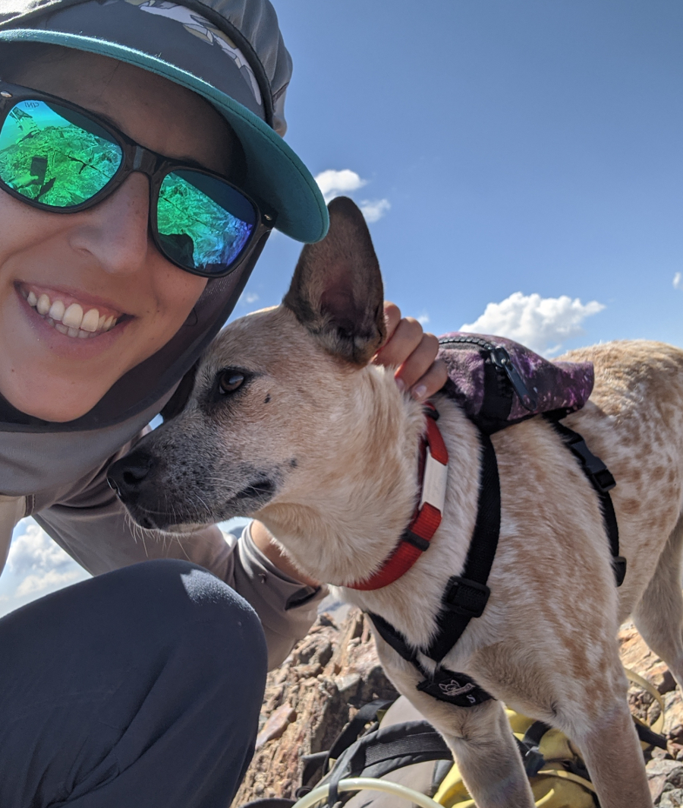
Summit selfie with my BFF Yelly!
We relaxed at the summit as Yelly ate snacks and video called Leo, and I checked out the solar-paneled weather station that had seen better days.
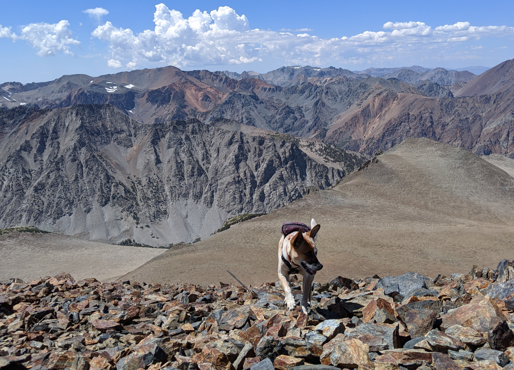
The clouds rolled in for our descent, and Yelly finally stopped splashing me with water. I ran ahead but checked back occasionally to see that she was still following me. That was a great day!
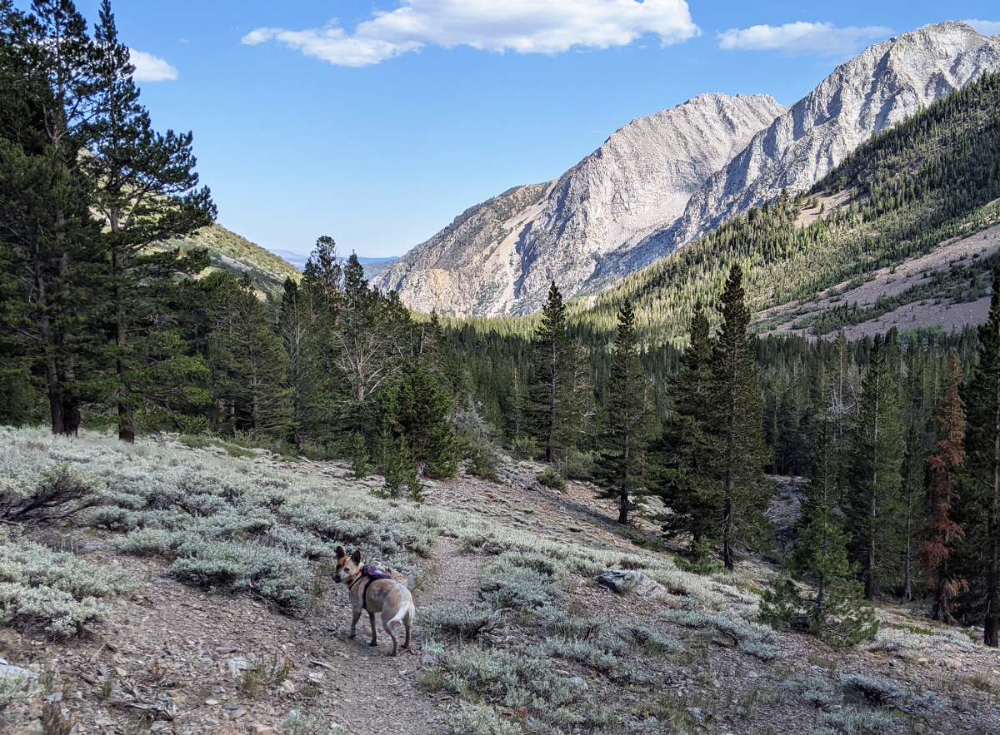
comments
No comments at the moment \o/ Hey, you could write one!
leave a comment
I really like comments!! Easy mode: email comments@daiyi.co, @ me or send a twitter dm. Hard mode: Make a PR.